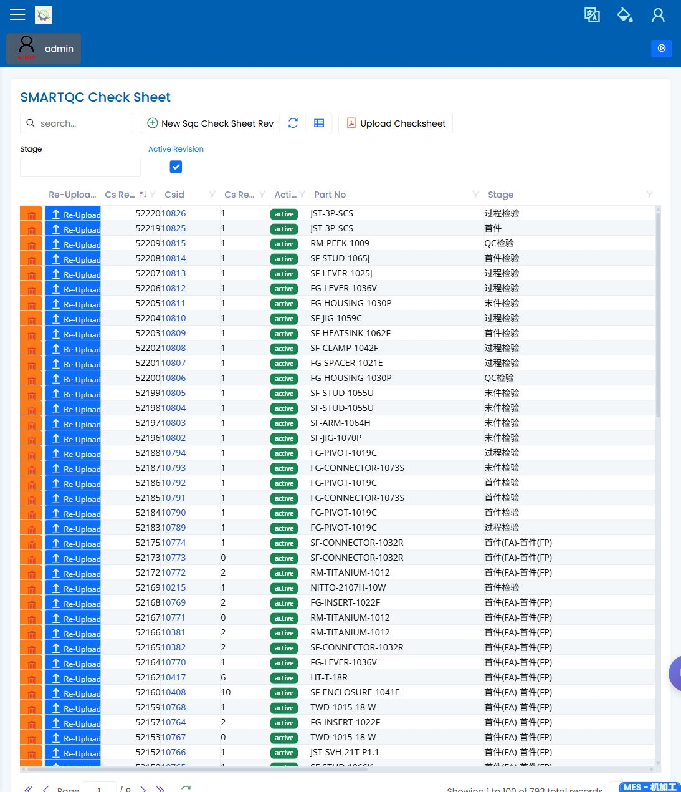

SMARTQC 检验表
English | 中文
Path: Quality / SMARTQC / Check Sheets URL: needs-decision（已有登录截图，但未记录准确部署路由）
页面用途
SMARTQC Check Sheets 用于复查操作员和质量工程师使用的检验模板。检验表控制要检查哪些特性、屏幕上显示哪些限值或结果选项，以及生产复查应使用哪个版本。
页面显示内容
- 带搜索、筛选和动作按钮的检验表列表。
- 所选检验表的版本信息。
- 显示表头详情、可选 CMM 程序、方法时间和检验项目的对话框。
- 通过 Excel 文件维护检验表时使用的上传或重新上传动作。
常用操作
- 搜索零件、阶段或活动版本。
- 打开版本并复查表头详情。
- 检查检验项目列表是否包含预期特性和限值。
- 在使用方法时间和 CMM 程序时确认其详情。
- 只有在复查文件版本正确时，才使用上传或重新上传。
要检查什么
- 活动版本是现场作业预期使用的版本。
- 阶段和零件信息与检验计划一致。
- 检验项目清楚可见，顺序便于复查。
- 除非文件已获确认，流程确认时不应使用上传动作。
常见问题
| 问题 | 含义 |
|---|---|
| 找不到预期版本 | 筛选可能隐藏了非活动版本，或版本尚未上传。 |
| 上传失败 | 必填表头字段或 Excel 文件可能缺失。 |
| 出现意外方法 | 上传文件可能包含尚未复查的方法名称。 |
| 检验计划无法使用该表 | 活动版本、零件或阶段可能与计划检验不一致。 |
相关页面
截图
